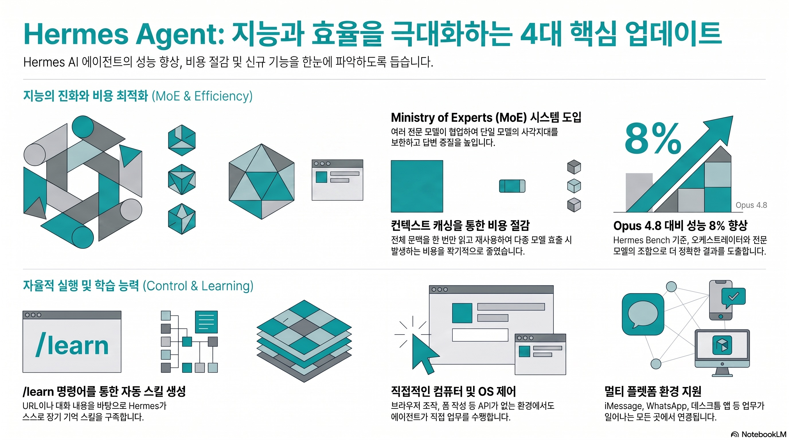

This Hermes Update Changes Everything...
한눈에 보기 (인포그래픽)

타임스탬프
- [00:00] The Big Four Updates
- [00:30] Meet The Ministry Of Experts
- [01:01] How Mixture Of Agents Works
- [01:49] Why The Cache Makes It Cheap
- [03:00] Hermes Bench And The 8% Claim
- [03:18] Setting Up Your Orchestrator
- [04:02] Tagging In The Reference Models
- [04:42] OpenRouter And ChatGPT Keys
- [05:34] Testing The Council Live
- [07:22] Swapping Models On The Fly
- [08:21] Hermes Controls Your Computer
- [09:14] The Forward Slash Learn Skill
- [10:25] Building A Skill From A Repo
- [11:36] Talking To Hermes With Voice
- [13:01] Compliance For Enterprise Use
- [14:26] Quickfire Updates Round
- [15:43] Levelling Up Your Agent